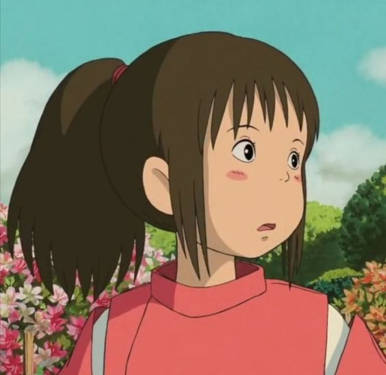
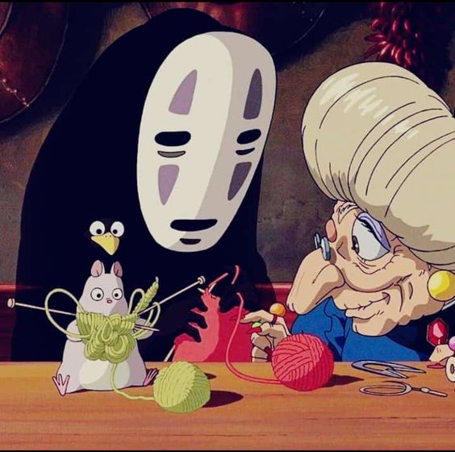
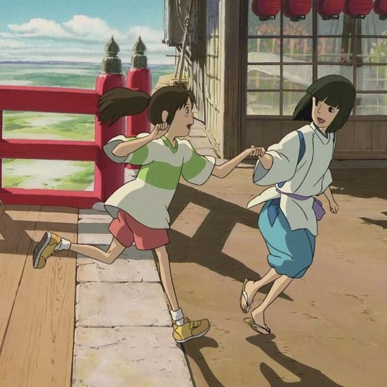
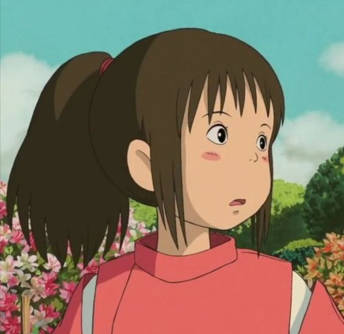
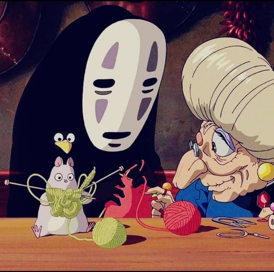
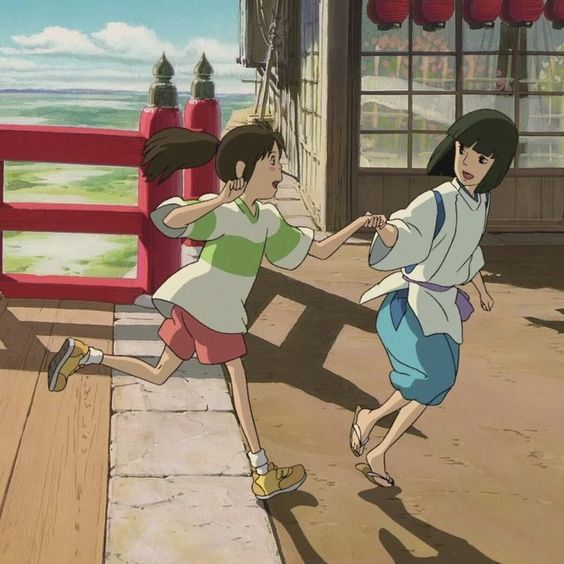

Chihiro es una niña de diez años caprichosa y testaruda que cree que el universo entero debe someterse a sus deseos. Camino de su nuevo hogar junto a sus padres, una idea que la enfurece, la familia se equivoca de camino y aparece al final de un misterioso callejón sin salida, donde topan con un extraño edificio con un largo pasaje que los conduce a un pueblo fantasmal donde los espera un magnífico banquete.
 





contenido
Chihiro, la protagonista, es una niña de 10 años que se muda a una nueva ciudad con su padres. Es tímida, un poco inmadura y bastante quejumbrosa, y no se imagina la aventura que está a punto de experimentar cuando ella y sus padres entren en un parque de diversiones abandonado.
Este lugar resulta ser un mundo paralelo a donde llegan personajes etéreos llamados “dioses” para divertirse y relajarse en la casa de baños termales de la bruja Yubaba, quien decide darle a Chihiro un trabajo como ayudante, no sin antes quitarle su nombre como parte de un hechizo para controlarla.
Chihiro tendrá que superar una serie de obstáculos para romper el conjuro que pesa sobre ella y sobre sus padres, quienes fueron convertidos en cerdos al entrar en este mundo fantástico. Por primera vez en su vida, tendrá que poner a prueba su valentía e inteligencia para sobrevivir.